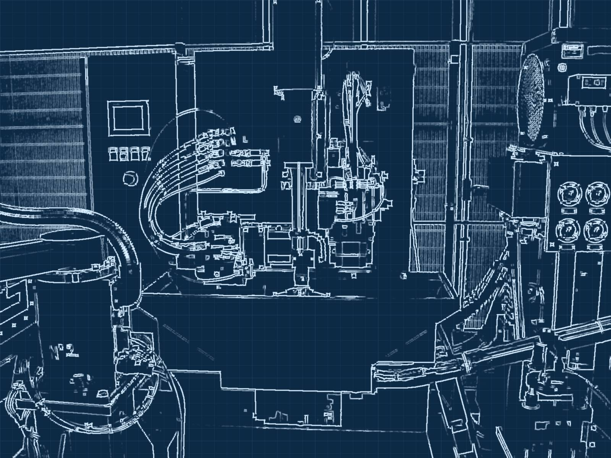
Progettiamo e costruiamo banchi di misura, automazioni e macchine speciali.
Studio di progettazione meccanica con officina interna a San Pietro in Casale (BO). Dal disegno CAD al collaudo, dal 1988.
- Fondato
- 1988
- come studio di progettazione meccanica
- Sede
- 500 m²
- metà studio tecnico, metà officina
- Montaggio e collaudo
- In casa
- macchine consegnate con marcatura CE
- Assistenza
- Italia ed estero
- manutenzione ordinaria e straordinaria
Dal disegno al collaudo, sotto lo stesso tetto.
Un solo interlocutore dall'idea alla macchina che lavora: progettiamo, costruiamo, montiamo e collaudiamo. Poi restiamo a disposizione per l'assistenza.
-
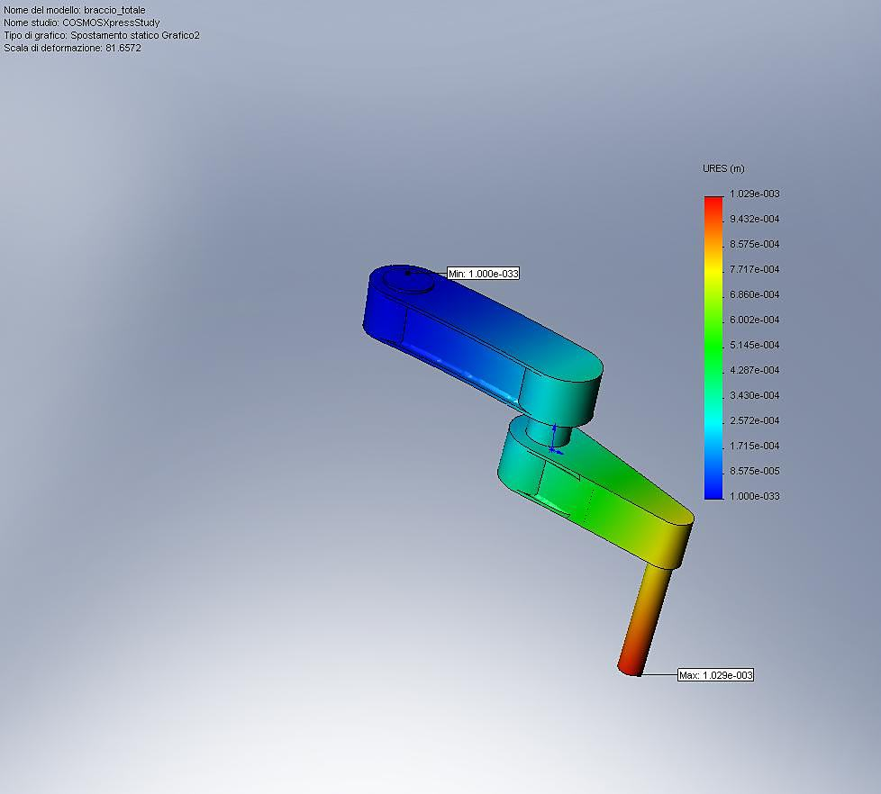
Progettazione
Siamo nati come studio di progettazione nel 1988, al tecnigrafo e con i primi CAD sul mercato. Oggi modelliamo in 3D e sviluppiamo studi, particolari, complessivi, distinte e documentazione: diventiamo il tuo ufficio tecnico, o lo potenziamo.
-
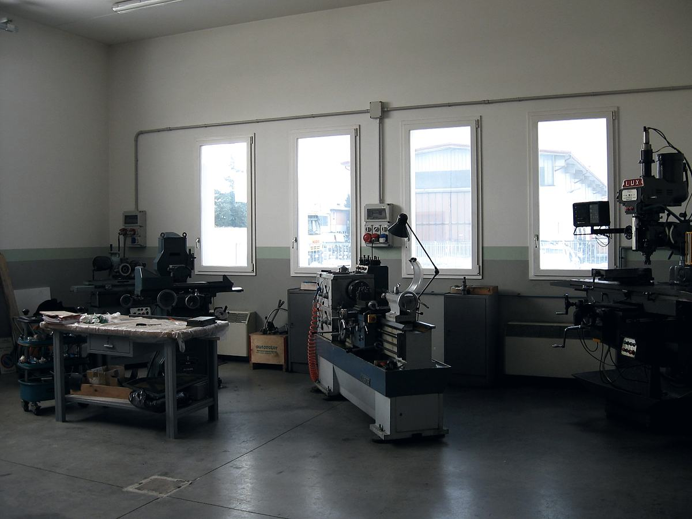
Costruzione
Costruiamo chiavi in mano, dal singolo pezzo all'isola di lavoro robotizzata: impianti pneumatici, oleodinamici ed elettrici, manuali d'uso e manutenzione, marcatura CE secondo la direttiva macchine. Le lavorazioni passano da una rete di fornitori collaudata, montaggio e collaudo li facciamo in officina. Montiamo anche conto terzi.
-
Assistenza
Interveniamo sulle nostre costruzioni in Italia e all'estero, per la manutenzione ordinaria e straordinaria. Revisioniamo anche macchine utensili datate, dentatrici in testa, con preventivo dettagliato e garanzia sull'intervento. E ti aiutiamo a impostare e gestire i sistemi CAD.
Lo disegniamo. Poi lo costruiamo.
Il prototipo di un parchimetro in lamiera inox di grosso spessore, finemente satinata: studiato nel design sul modello 3D, costruito in officina e poi portato alla serie.
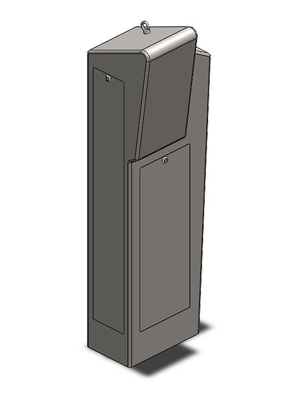
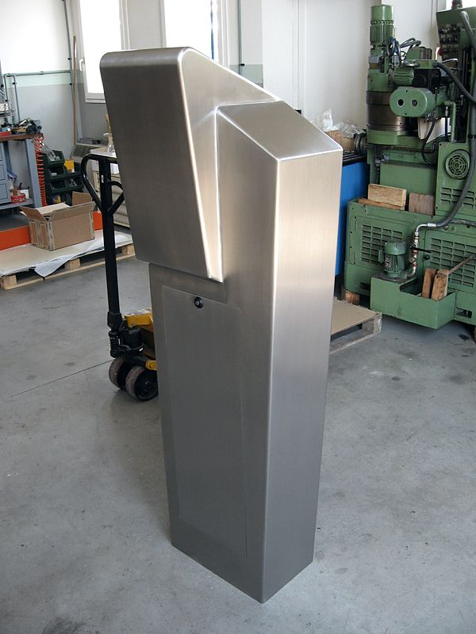
La misura è la nostra specialità.
Dal tampone manuale alla macchina che esegue decine di controlli dimensionali e geometrici: progettiamo e costruiamo sistemi di controllo dimensionale ad altissima precisione, anche abbinati alle prove non distruttive.
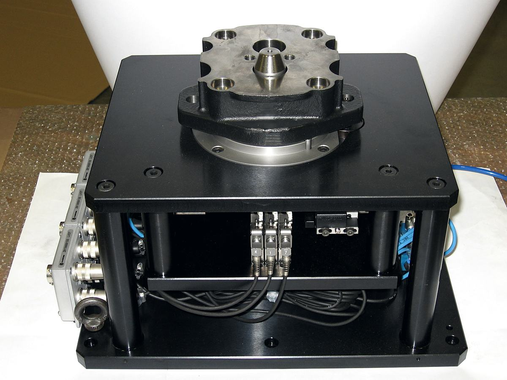
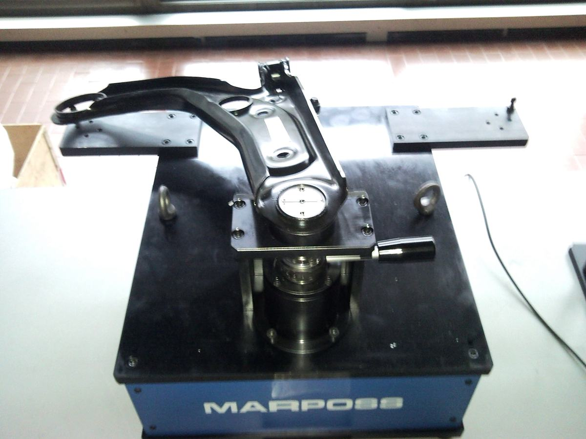
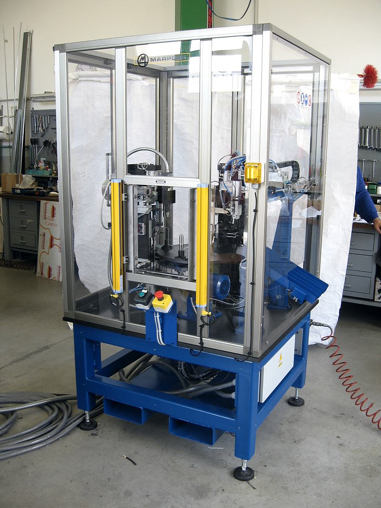
- Misuratori e sistemi di compensazione per rettifiche e altre macchine utensili
- Stazioni di misura manuali, sensori e componenti di misura
- Stazioni di misura automatiche
- Hardware e software per la raccolta dati e l'analisi del processo
- Sistemi di controllo non distruttivo
Hai un pezzo da misurare o controllare? Mandaci il disegno: ti diciamo come lo faremmo.
Richiedi un preventivoMacchine, automazioni e attrezzature su misura.
Ogni costruzione parte dal pezzo e dal ciclo del cliente. Questi sono gli ambiti in cui lavoriamo più spesso: tocca una voce per vederla.
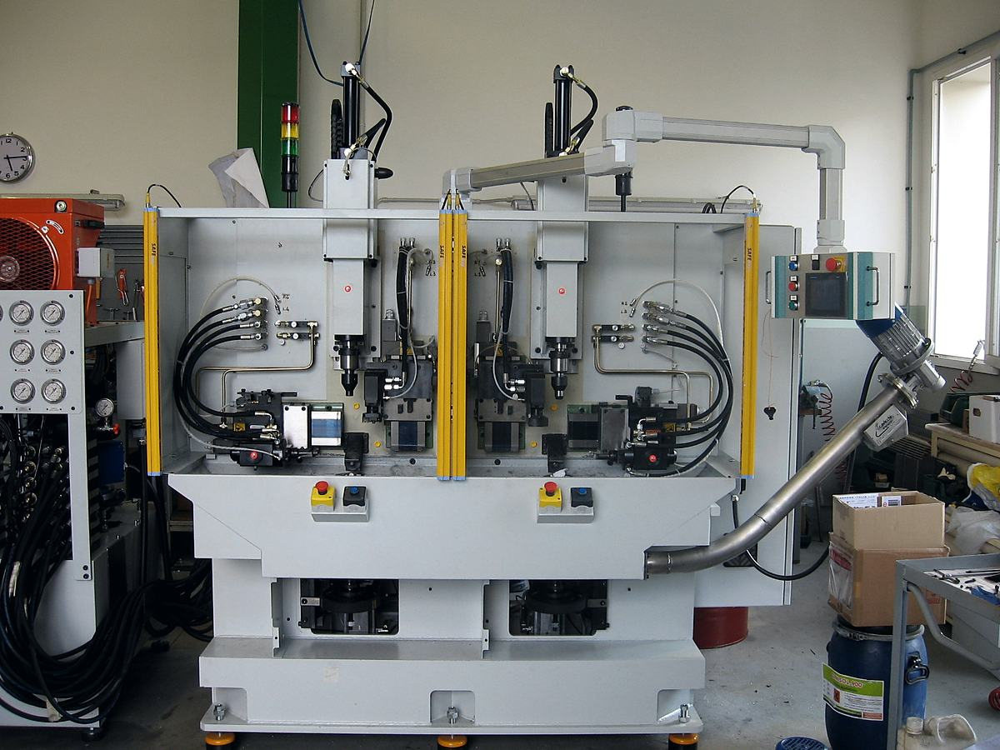
Macchine che automatizzano una o più lavorazioni su un pezzo o su una famiglia di pezzi. Spesso le abbiniamo ai banchi di misura che verificano subito la lavorazione eseguita.
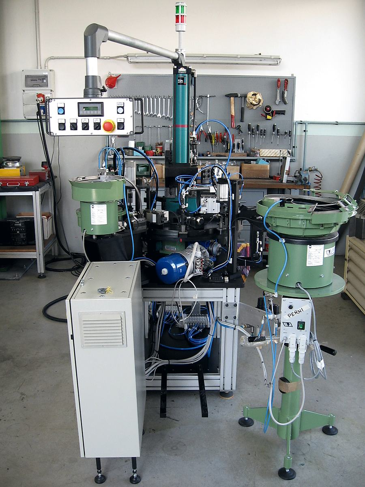
Macchine automatiche che assemblano un gruppo di pezzi per creare un componente, o che svolgono le operazioni che preparano il montaggio: selezione, orientamento, alimentazione.
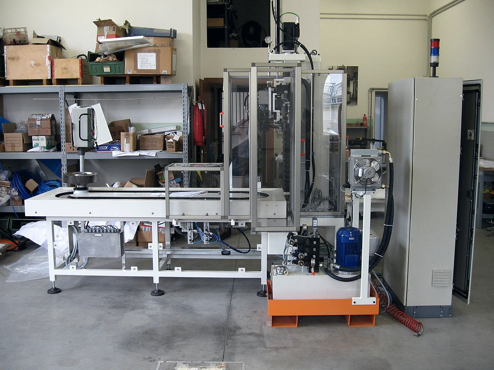
Operazioni molto ripetitive svolte in autonomia, o quasi: confezionamento, movimentazione e carico dei pezzi. Collaboriamo da anni con le aziende più importanti del territorio e anche fuori regione.
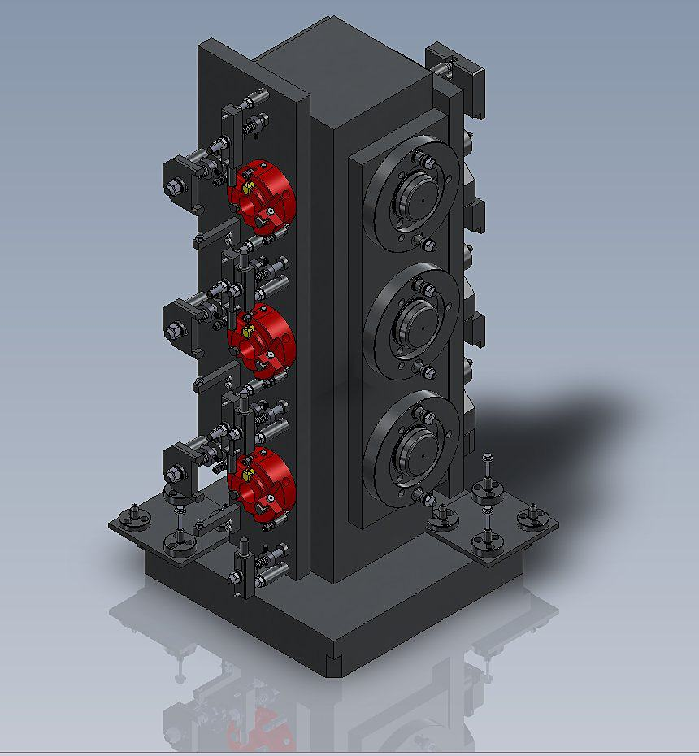
Attrezzature che bloccano uno o più pezzi in modo preciso, stabile e sicuro durante la lavorazione. L'esempio tipico è il cubo di staffaggio: centraggi, perni di orientamento, staffe e irrigiditori su ogni faccia.
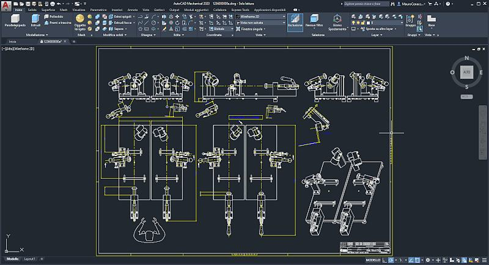
Attrezzi manuali che aiutano l'operatore nelle operazioni di montaggio più ripetitive, per assemblaggi veloci, facili, precisi e sicuri.
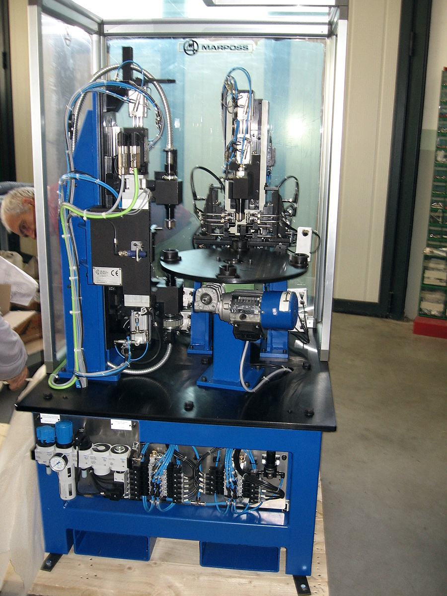
Verificano l'integrità del pezzo e le proprietà del materiale, di solito con prove non distruttive. Spesso controllo e misura convivono nella stessa macchina.
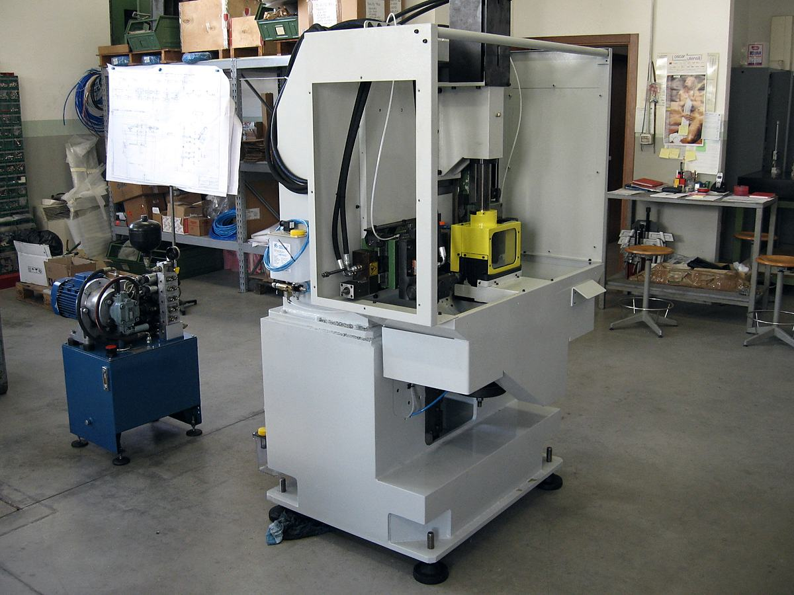
Recuperiamo macchine utensili obsolete o con problemi meccanici ed elettrici, come questo tornio automatico speciale. Sulle dentatrici facciamo revisioni complete, anche presso il cliente.
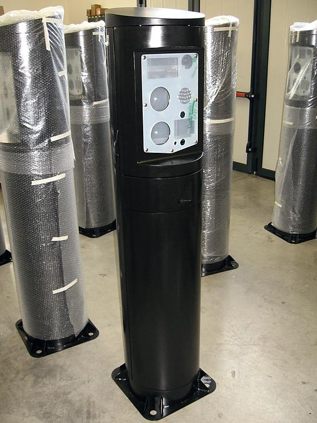
Con il CAD e la costruzione in casa passiamo in fretta dall'idea all'oggetto: prototipi come il parchimetro in inox o la colonna per accesso pedonale, poi l'industrializzazione per la serie.
Nel passo di ogni ingranaggio c'è π.
p = π · m
p è il passo, m il modulo: la stessa π che abbiamo nel nome.
Le dentatrici sono le macchine che tagliano gli ingranaggi. Le revisioniamo da cima a fondo, anche presso il cliente: pulizia e smontaggio completo, raschiettatura delle guide, revisione di testa porta-creatore, divisore e impianti, nuovo impianto elettrico, riverniciatura e collaudo. Con preventivo dettagliato e garanzia sull'intervento.
Richiedi un preventivoAlcuni lavori usciti dalla nostra officina.
Ne mostriamo solo una piccola parte: quasi tutti i progetti sono coperti da accordi di riservatezza e dai brevetti dei nostri clienti.
Lavoriamo nel CAD che usi già.
Lavorare con aziende leader di settori diversi ci ha portato ad adottare molti sistemi, anche in più versioni insieme: ci adeguiamo a quello che usa il cliente. Sugli stessi sistemi offriamo anche consulenza.
Dove abbiamo più esperienza
- Industria farmaceutica: macchine per dosaggio e compresse, conteggio capsule e riempimento flaconi, riempimento di liquidi in ambiente non sterile
- Macchine utensili, tradizionali di serie e speciali a prototipo
- Confezionamento e automazione industriale
- Misura e controllo dimensionale e non distruttivo
| Pos. | Sistema | Produttore | Tipo |
|---|---|---|---|
| 1 | Creo (Pro/Engineer, dalla v. 18 a Wildfire 5.0) | PTC | 3D |
| 2 | SolidWorks Premium | Dassault Systèmes | 3D |
| 3 | Inventor Fusion | Autodesk | 3D |
| 4 | AutoCAD e AutoCAD Mechanical | Autodesk | 2D |
| 5 | Professional CADAM (workstation AIX IBM RISC) | IBM | 2D |
| 6 | CADAM Drafting | Dassault Systèmes | 2D |
| 7 | Helix Drafting 2000 e MicroCADAM | CADAM | 2D |
| 8 | Cimatron It | Microsystem | 2D |
| 9 | ME10 (workstation UNIX) | HP | 2D |
| 10 | GBG Draft Maker | Cad.Lab | 2D |
Tre progettisti e un tecnigrafo, dal 1988.
Lo Studio Pigreco nasce nel 1988 a Granarolo dell'Emilia, dalla società di tre progettisti meccanici. Nel 2000 ci trasferiamo a San Pietro in Casale, in una sede costruita apposta: 500 m² divisi a metà tra studio di progettazione e officina di costruzione e assemblaggio.
Nel 2010 partecipiamo alla fondazione del Consorzio Mecasistem, quattro imprese della meccanica di precisione. Molti clienti ci scelgono come collaboratori da lunga data: entriamo nella loro realtà e affrontiamo ogni problema con un metodo di analisi collaudato.
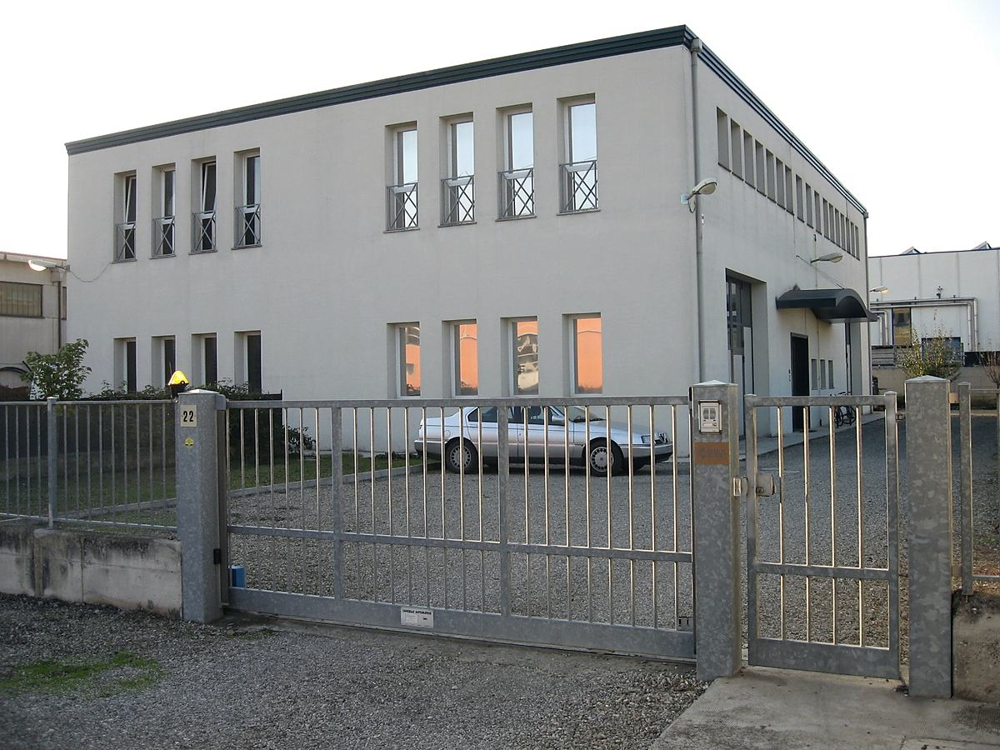
- 1988Nasce lo studio a Granarolo dell'Emilia
- 2000Nuova sede a San Pietro in Casale
- 2010Fondazione del Consorzio Mecasistem
- Oggi38 anni di progetti
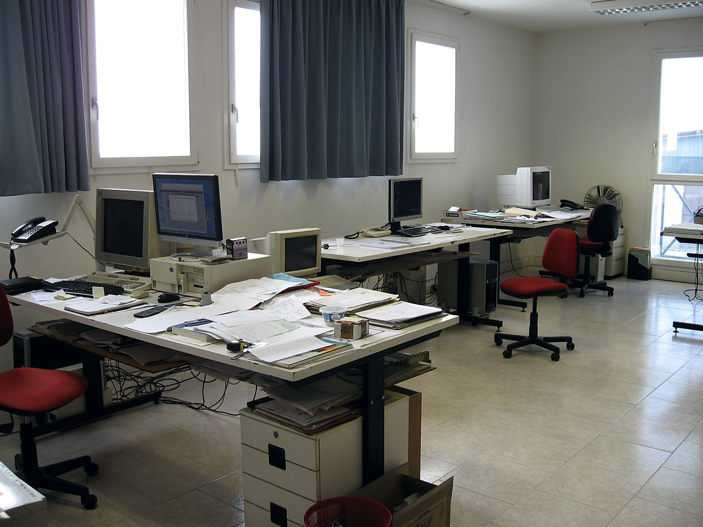
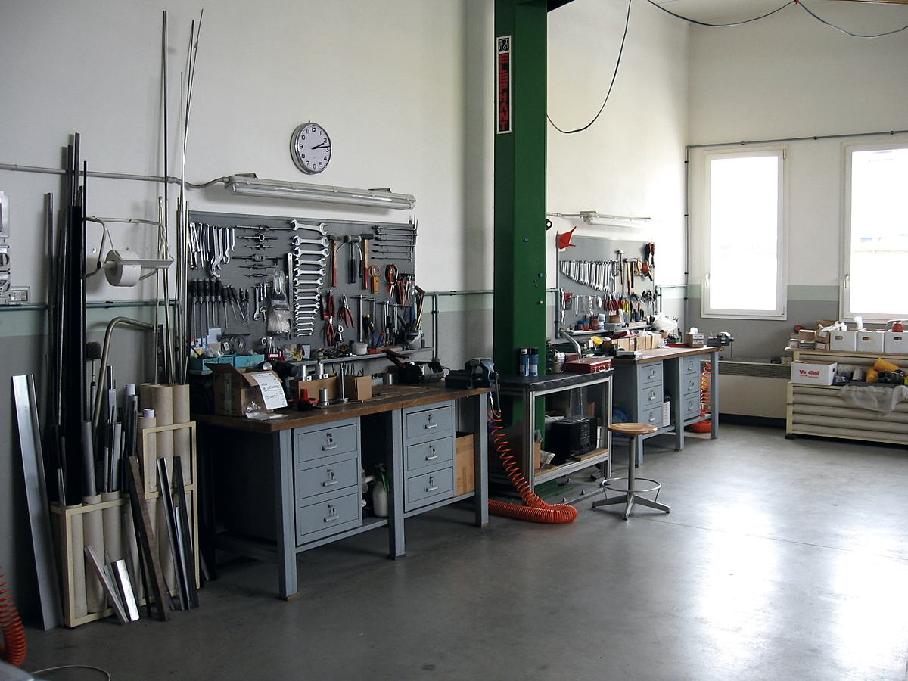
Parlaci del tuo progetto.
Piccolo o grande che sia, anche solo per capire se si può fare: rispondiamo con una valutazione tecnica, senza impegno.